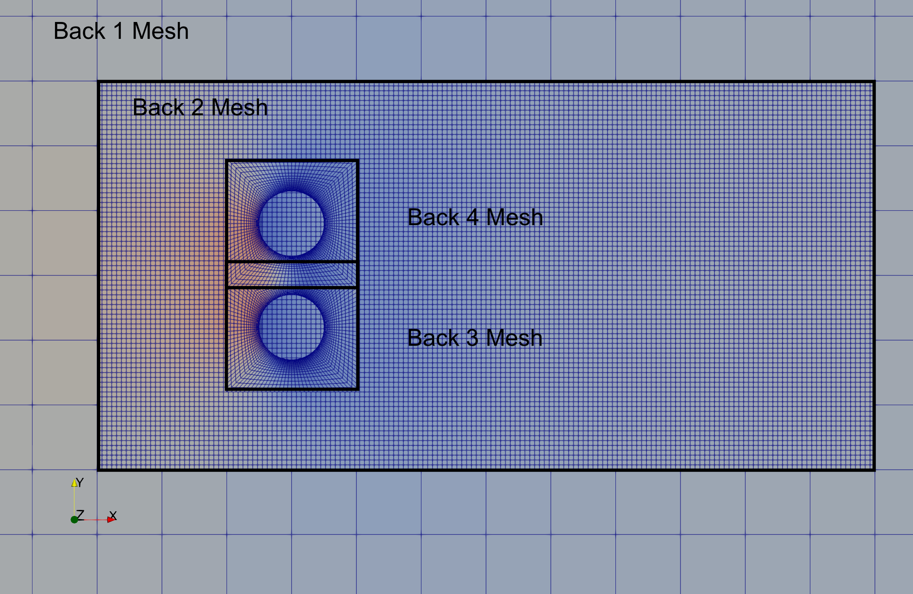
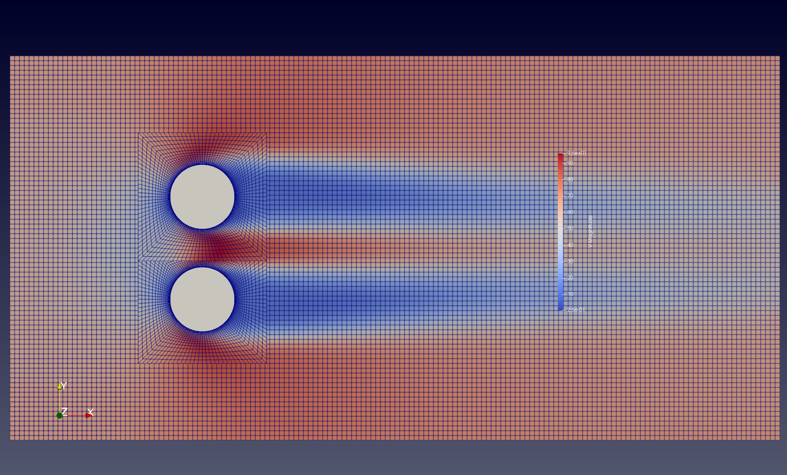
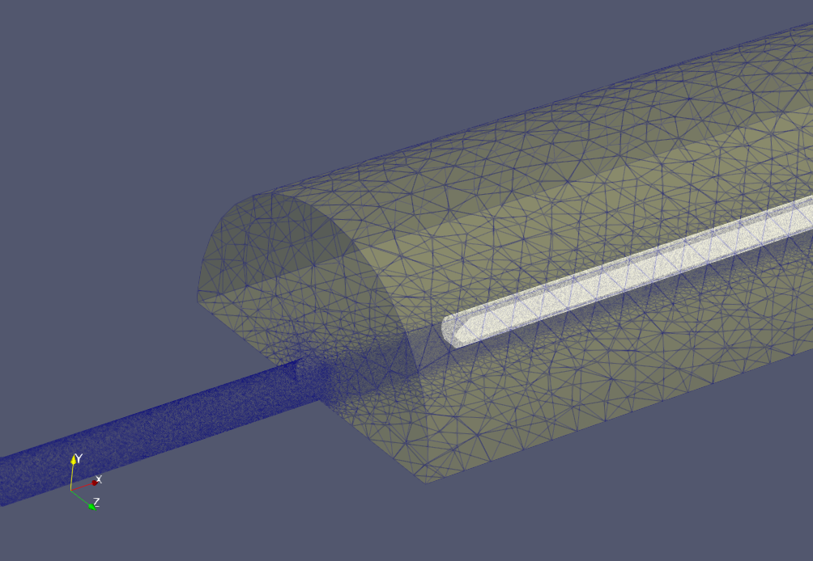
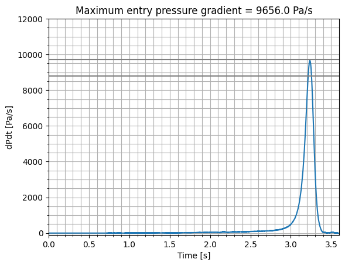

Tutorial 6: Overset Meshes¶
There are various situations in CFD modelling when it is useful to be able to place one mesh over the top of another one, effectively blanking out the cells in the lower level mesh in favour of the mesh on top, while maintaining solution accuracy across the interface.
We may want a higher order of solution accuracy in a region of the original finite volume mesh. The overset mesh would be designed for a higher order simulation than elsewhere in the flow domain.
We may want to include a component in a simulation that is not part of the original mesh. For example, we may want to add a rotating component to a static mesh. The overset mesh would be designed for the rotating component, and would be placed over the static mesh.
A specific mesh may already exist for a rotating component (such as a propeller) that we want to be able to easily add to models of different aircraft without having to re-create the propeller mesh. The propeller meshes (there may be several) are overset on the aircraft mesh, allowing for a fully coupled solution.
There may be components in relative motion, such as a train entering a tunnel. In this case the mesh for the train can overset the background mesh for the tunnel, and the train can move into the tunnel without the need for any new mesh generation. The solver takes care of the changing mesh mapping across the boundary as the train moves, including preservation of the solution accuracy with a region of overlapping meshes.
There may already be a high quality mesh for an aircraft or a cityscape, and we want to include a new component or a new building without regenerating the entire mesh. It may be simpler to include any changes into a new mesh of a small region, and apply it like a patch as an overset mesh.
This is called an overset mesh technique, and is supported by zCFD. In all cases, the flow solutions are calculated separately on each mesh, with the solver managing the interfaces and interpolation accuracy. zCFD will support different solution methods, different orders of spatial accuracy on each mesh, and arbitrarily large numbers of overset meshes in each simulation. The order of the sequence of meshes specified by the user determines which mesh is active in each part of the flow domain. zCFD automatically manages the data exchange between all meshes, including parallel partitions.
Example 1 - Multiple Overset Cylinder Test Case¶
There are 4 (mesh, control dictionary) pairs of input files. These are listed in a special “override” file called “oversetmulticylinder.py” used for overset cases:
override = {'mesh_case_pair': [('back1.h5', 'back1'),
('back2.h5', 'back2'),
('back3.h5', 'back3'),
('back3.h5', 'back4')]}
Note that in this case, the “back3.h5” mesh defining a cylinder has been used twice. This is OK, because the “back3.py” and “back4.py” control dictionaries each apply a different transformation (down and up along the y-axis respectively). The solver knows that the meshes are used for different solutions, in different parts of the flow domain. Also note that the translated mesh for “back4” overlaps the translated mesh for “back3” (the mesh between the two cylinders). This is also OK because the solver knows that “back4” oversets “back3”, which oversets “back2” and “back1”. In each case, the active solution is the one on the top-level oversetting mesh.
The files for running the case are available for download here.
For each of the meshes, a transformation has been defined in the corresponding control file, for example the “back1.h5” mesh is moved according to the transformation defined by the following lines in the “back1.py” control dictionary:
"mesh transform matrix": zutil.transform.translate(
[0.0, 0.0, 0.0], [0.0, 0.0, -1.5]
),
This tells the solver to use the inbuilt transformation function in zutil to translate the mesh down in the z-axis by 1.5 units. The lowest level mesh (i.e. that does not overset any other meshes) does not require any other modification, providing that the order of solution spatial accuracy supported by the meshes that overset it are that same as its own accuracy. For all of the meshes that overset at least one other mesh, a special boundary condition must be applied to any zone (boundary) where information is to be exchanged between meshes. For example, in “back3.py” the following line is used:
"BC_2": {"zone": [13], "type": "overset"},
For the “back3.h5” mesh, zone 13 (comprising boundary faces excluding symmetry planes and the cylinder surface) is designated as an overset boundary. This means the solver will interpolate and exchange data between this zone and the background mesh (“back2.h5”). The software automatically calculates the necessary mapping and interpolation coefficients to preserve the spatial accuracy of the overset solution.
The “Multiple Overset Cylinder” test case runs in a few minutes on a GPU, with the simple command:
run_zcfd -f oversetmulticylinder.py
The usual command line arguments specifying the mesh and the case name are not required as they are replaced with the list in the “override” dictionary specified within the “oversetmulticylinder.py” file.
When complete, the following outputs should be produced:
back[1,2,3,4]_P1_OUTPUT
back[1,2,3,4]_report.csv
back[1,2,3,4]_results.h5
back[1,2,3,4]_status.txt
oversetmulticylinder.log
oversetmulticylinder_report.ipynb
Where the [1,2,3,4] indicates that the file or directory exists for each overset solution separately. From a post-processing perspective, overset grids offer a significant advantage: independent solutions that only exchange boundary data during computation. This independence can save post-processing time and memory, as not all solution files are needed to analyse specific regions. However, a separate step is necessary to combine these independent solutions for domain-wide processing, such as extracting cross-sections. ParaView can be used to illustrate this combination process.
Post-processing using ParaView¶
To combine the 4 overset meshes into a single solution that can be operated on as though it were a single object, we use the “Append Datasets” filter in ParaView.
Launch ParaView so that you can load the solution files (locally or remotely).
Load the 4 files “back*_P1_OUTPUT/back*.pvd” for * = 1,2,3 and 4.
Highlight all 4 files on the navigation tree (on the left) and select “Filters > Append Datasets”. This will create a new item in the navigation tree called “AppendDatasets1” that acts on all four datasets at once.
The volumetric data output for this case contains a variable called “overset” which is 0 or 1 for any cell in the meshes. 0 means that the cell has been overset by another mesh, and 1 means that the cell is the active cell in that location. Use the “Filters > Threshold” filter to select only the cells in the “AppendDatasets1” combined dataset that have an “overset” value of 1 (do this by changing the lower threshold value from 0 to 1). This will create a new item in the navigation tree called “Threshold1” excluding any cells that have been overset by cells in another mesh.
Use the “Filters > Cell Data to Point Data” filter to interpolate the cell data from “Threshold1” to the mesh nodes. This makes subsequent interpolation operations in ParaView more accurate. This will create a new item in the navigation tree called “CellDatatoPointData1”.
Use the “Filters > Slice” filter to extract the solution from “CellDatatoPointData1” onto a plane with normal in the “Z” direction. Note that this contains data from all 4 meshes.
Colour the new “Slice1” object by “V” “Magnitude”, selecting “Surface With Edges” in the visualisation toolbar.
Other post-processing steps such as streamlines or animations will also work with overset meshes in the same manner. If the meshes are in relative motion throughout an unsteady simulation, ParaView will automatically update their positions.
[Optional] The “back2” solution will show through behind the “back3” and “back4” overset solutions because of the holes where the cylinders are. Any solution is non-physical, and an easy way to mask this effect is to insert some simple geometry to show the location of the cylinders. Use “Sources > Cylinder” to create a unit diameter cylinder at [0,0,0] and rotate it 90 degrees about the x-axis, then translate it in the y-axis by -0.8 in y to put it into place. Repeat, but with a translation of +0.8 for the other cylinder.
[Optional] The above steps will produce the image below:
To create the image in the validation page, you can force ParaView to bring the overset meshes to the foreground by treating each of the overset meshes independently, and adding a small incremental offset normal to the slice plane to each cylinder mesh (0.0, 0.001, 0.0015, 0.002). This will better reflect what the solver will actually see, as the overset cells in the background meshes will not be active.
Example 2 - Train Tunnel Test Case¶
This test case demonstrates the zCFD overset capabilities to predict the micro pressure wave generated as a train enters a tunnel, and is a good example of a practical application of overset meshing. The simulation set up follows that described in Section 7.6 of Railway applications — Aerodynamics — Part 5: Requirements and test procedures for aerodynamics in tunnels. In order to avoid transients, the train is linearly accelerated from 0 to 250 km/hr over 1.5 seconds.
For the reference train entering the reference tunnel at 250 km/hr, the maximum entry pressure gradient dp/dt should be in the range of 8800 Pa/s to 9500 Pa/s. These values are used to validate the simulation.
The input control dictionary for the train in this case also shows how to programmatically define the motion of a mesh in time:
def linear_accel(**kwargs):
t = kwargs["time"]
dt = kwargs["time step"]
u = [-69.4, 0, 0]
if t < 1.5:
u[0] = -(t / 1.5) * 69.4
return {"velocity": tuple(u)}
This function returns the velocity to be applied to a fluid zone, which is then defined by:
'FZ_1' : {
'type' : 'translating',
'zone' : [6],
'vector' : [-1,0,0],
'mach': 69.4 / math.sqrt(1.4 * 287 * (277.7777 + 15)),
'translation function': linear_accel,
},
The motion is applied to the mesh because of the keyword ‘moving mesh’ in the ‘time marching’ section of the control dictionary. This will force a recalculation of the physical location of the mesh, including the recalculation of any overset mappings, every real time step.
"time marching": {
"unsteady": {"total time": 3.6,
"time step": 0.001,
"order": 1, "start": 0},
"scheme": {"name": "implicit euler", "stage": 1},
"cfl": 30,
"cycles": 5,
"moving mesh": True,
},
The meshes and control files for the train and the tunnel can be downloaded from here.
The train tunnel case is larger than the previous case in this tutorial: the train mesh has 1.31m cells and the tunnel has 7.35m cells. To run this case in implicit mode on a GPU will require approximately 48GB RAM. If this is not available locally, a range of computing resources are available via EPIC.
The case can be run with the command
run_zcfd -f override_roe.py
Post-processing¶
To plot the entry pressure gradient over time, copy the following Python code into a file ‘create_plot.py’:
# Compute maximum entry pressure gradient dp/dt
import matplotlib.pyplot as plt
ts = 0.001
file_name = "tunnel_roe_report.csv"
p_data = []
with open(file_name) as fp:
line = fp.readline().split()
count = 0
val = 0
while line:
line = fp.readline().split()
if len(line) > 0:
c = int(line[0])
if c != count:
count = count + 1
val = float(line[7])
p_data.append(val)
p_grad_data = []
time = []
for i in range(len(p_data)-1):
if ts*i < 4:
p_grad_data.append((p_data[i+1] - p_data[i]) / ts)
time.append(ts * i)
plt.minorticks_on()
plt.grid(which="both")
plt.title('Maximum entry pressure gradient = '+str(round(max(p_grad_data),6))+' Pa/s')
plt.xlabel("Time [s]")
plt.ylabel("dPdt [Pa/s]")
plt.xlim(0, 3.6)
plt.ylim(-100, 12000)
plt.plot(time, p_grad_data, label="250km/hr @ 15oC")
plt.plot([time[0],time[-1]],[8800,8800],label='min valid dP/dT',c='grey')
plt.plot([time[0],time[-1]],[9700,9700],label='max valid dP/dT',c='grey')
plt.show()
plt.savefig("EntryPressureGradient.png")
plt.close()
Then run the code in the same directory as the solution files with the command:
python create_plot.py
This will create the following plot, showing the maximum entry pressure gradient as a function of time. The maximum entry pressure gradient is 9656.0 Pa/s, which is within the range of values specified [8800.0, 9700.0] in the standard.
Citations¶
EN 14067-5:2006 - Railway applications - Aerodynamics - Part 5: Requirements and test procedures for aerodynamics in tunnels, See <https://standards.iteh.ai/catalog/standards/cen/ea6cb49e-c40a-4b8b-a059-c6debdb91dc7/en-14067-5-2006>

{kind=link}
{kind=link}
{kind=link}
{kind=link}
{kind=link}